In this project, I implemented and analyzed three fundamental classical encryption techniques that form the foundation of modern cryptography. I focused on both programmatic approaches and practical cryptanalysis using industry-standard tools. The goal was to understand the strengths and weaknesses of these encryption methods and how they can be compromised through frequency analysis and cryptographic attacks.
The three encryption methods I explored were: 1. Playfair Cipher – a digraph substitution cipher 2. Byte Addition Encryption – a simple modular arithmetic approach 3. Exclusive-OR (XOR) Encryption – a bitwise operation technique
The Playfair Cipher is a classical digraph substitution cipher that treats pairs of letters as single units. I learned that this cipher was invented by British scientist Sir Charles Wheatstone in 1854, though it bears the name of Baron Playfair, who championed it at the British foreign office.
The cipher relies on a 5×5 matrix constructed from a keyword. For example, using "monarchy" as the keyword:
| M | O | N | A | R |
|---|---|---|---|---|
| C | H | Y | B | D |
| E | F | G | I/J | K |
| L | P | Q | S | T |
| U | V | W | X | Z |
The matrix is built by placing the keyword's letters (without duplicates) in reading order, then filling the remaining positions with the alphabet in order. The letters I and J are treated as a single position.
I implemented the following encryption rules:
Repeated Letters: When plaintext letters would form a pair in the same position, I separate them with a filler letter (x). For example, "balloon" becomes "ba lx lo on"
Same Row: Letters in the same row are each replaced by the letter to their right, wrapping around circularly. For instance, "ar" encrypts to "RM"
Same Column: Letters in the same column are each replaced by the letter below them, wrapping from bottom to top. As an example, "mu" encrypts to "CM"
Rectangle: For letters that fall in different rows and columns, each letter is replaced by the letter in its row and the column of the other plaintext letter. Thus "hs" becomes "BP" and "ea" becomes "IM"
In this phase, I performed a detailed cryptanalysis of byte addition encryption using CrypTool-1. This method adds a key character-by-character (byte-by-byte) to plaintext using modulo 256 arithmetic, where carries are ignored. The key is applied cyclically, restarting once all characters are consumed.
First, I opened the example file (CrypTool-en.txt) and analyzed its character frequency distribution to establish baseline statistics.
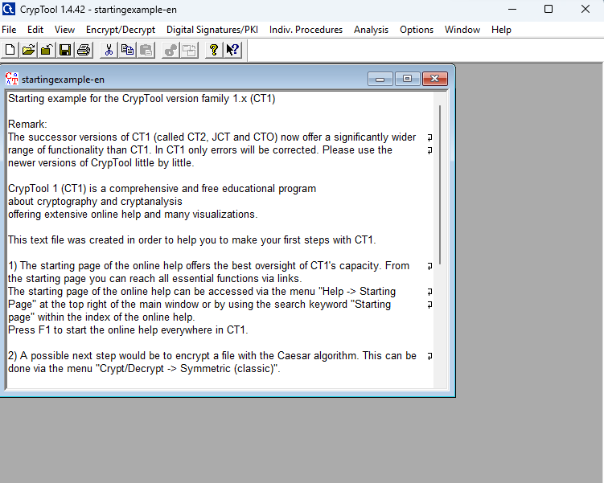
Opening the example plaintext file in CrypTool to establish baseline character statistics.
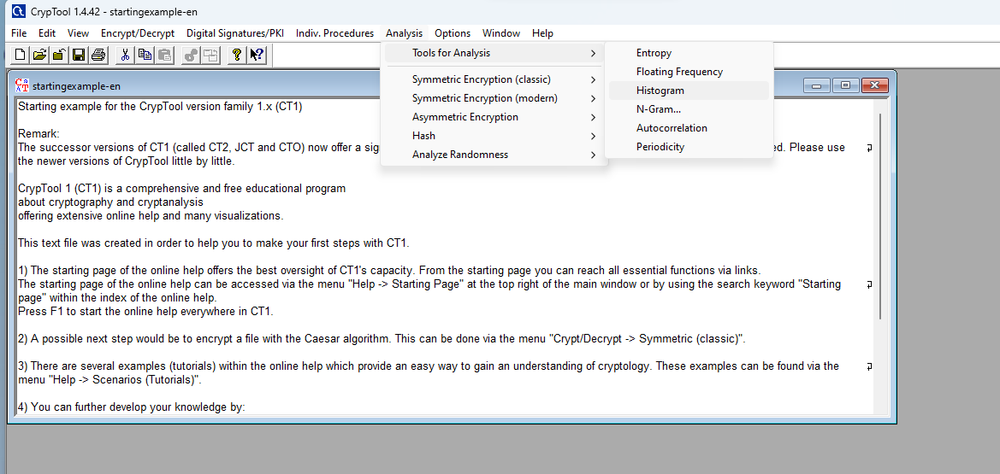
Tools for Analysis > Histogram in CrypTool" loading="lazy">Selecting the Histogram tool from the Analysis menu to generate a frequency distribution.
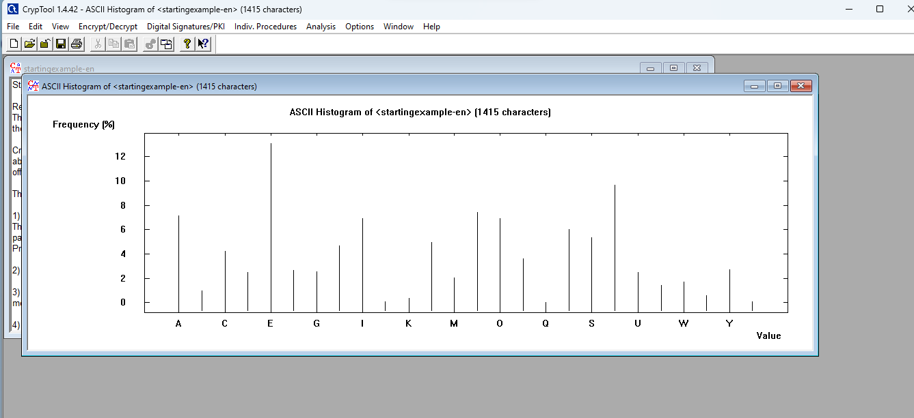
The analysis confirmed that the letter 'E' appears most frequently in the English text, a critical insight for frequency-based attacks.
I encrypted the plaintext using the key 12 34 AB CD. This demonstrates how the encryption algorithm applies the key cyclically across the entire message.
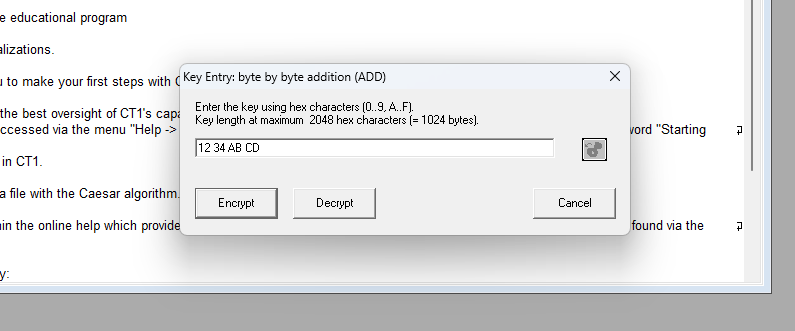
Setting up the byte addition encryption with the specified key.
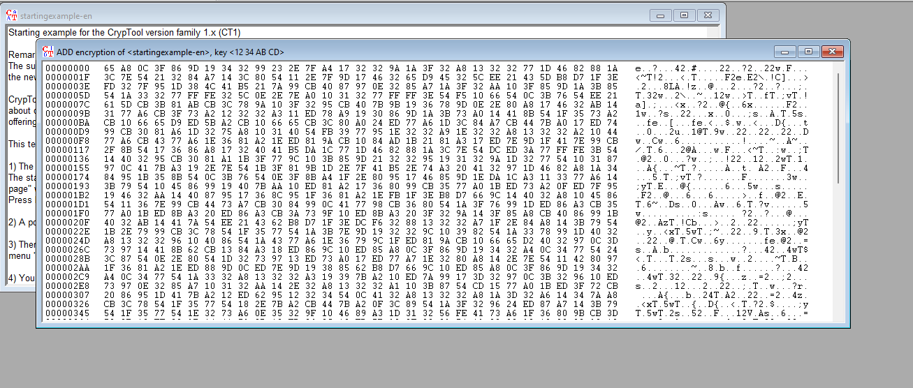
The resulting ciphertext after applying byte addition encryption.
I then performed a ciphertext-only attack, which is a critical vulnerability assessment for this cipher. I used only the encrypted text and statistical analysis to recover the key and plaintext.
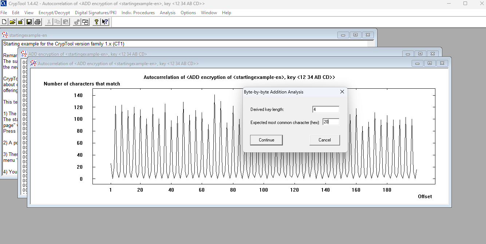
The autocorrelation analysis identified the key length as 4 and prompted for the expected most common character (hex 20, representing a space).
The analysis calculated the key length and identified the most common character. Since I knew the most frequent plaintext character was 'e' (hexadecimal 65) and the most frequent ciphertext character was 'E' (hexadecimal 45), I calculated the difference: 65 - 45 = 20 (hex). I entered this value into the analysis tool.
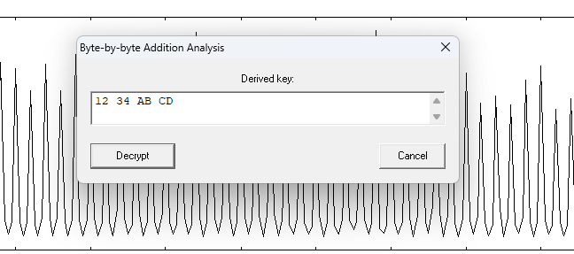
CrypTool successfully recovered the original key (12 34 AB CD) through statistical analysis, demonstrating the cipher's vulnerability.
The tool successfully recovered the original key 12 34 AB CD, revealing the plaintext:
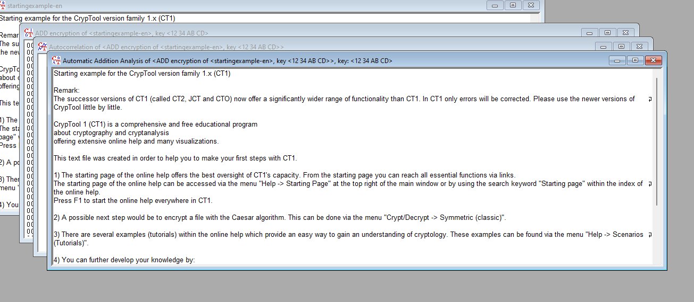
The plaintext successfully recovered using only the ciphertext and frequency analysis.
I then tested a critical security principle: how compression affects encryption. I compressed the original plaintext using ZIP compression.
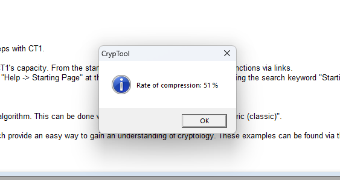
The ZIP compression achieved a 51% compression rate on the plaintext file.
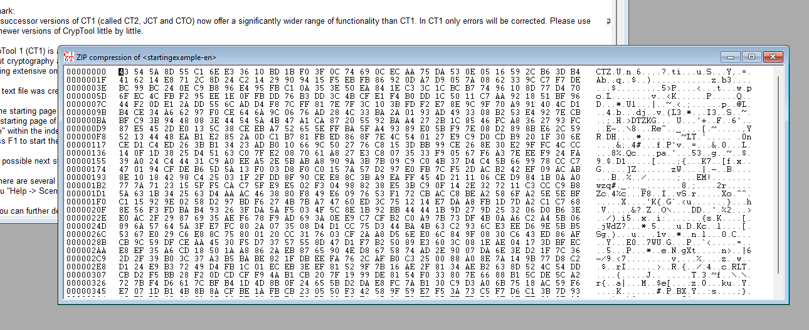
The compressed file contents shown in hex view, ready for histogram analysis.
I analyzed the histogram of the compressed data to observe how compression changes character distribution:
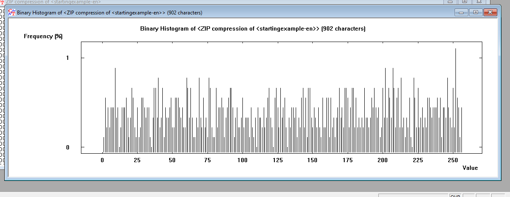
The compressed data shows a dramatically different character frequency distribution—characters are much more evenly distributed, eliminating the distinctive 'E' frequency peak.
I then encrypted the compressed file using the same key (12 34 AB CD):
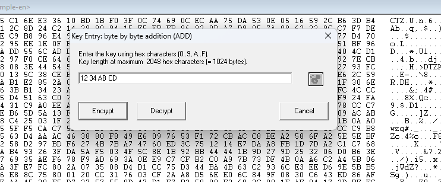
Encrypting the compressed data using the same byte addition key (12 34 AB CD).
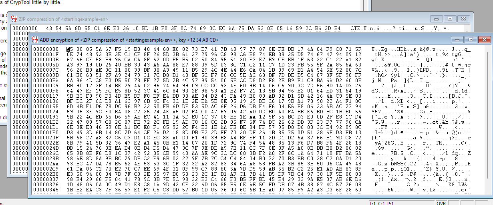
The resulting ciphertext from encrypting the compressed data, displayed in hex view.
When I performed the ciphertext-only attack on the compressed-encrypted data, the results were dramatically different:
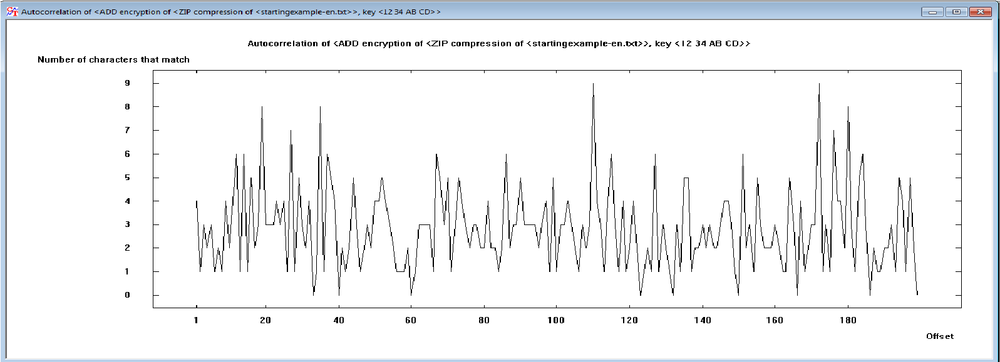
The autocorrelation chart shows no clear periodic peaks, indicating the analysis cannot reliably determine the key length.
The tool returned an incorrect key length of 1 (versus the correct length of 4), and it was impossible to recover the correct key:
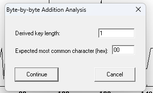
The attack failed — the tool derived an incorrect key length of 1 (instead of 4) because compression eliminated the frequency patterns that make this cipher vulnerable.
Despite the attack's failure, with knowledge of the original key, I was able to successfully decrypt and decompress the data:
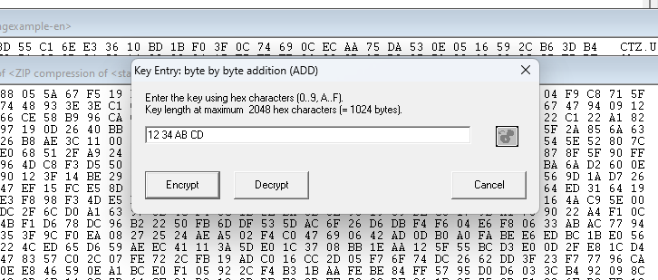
Entering the original key to decrypt the compressed-then-encrypted data.
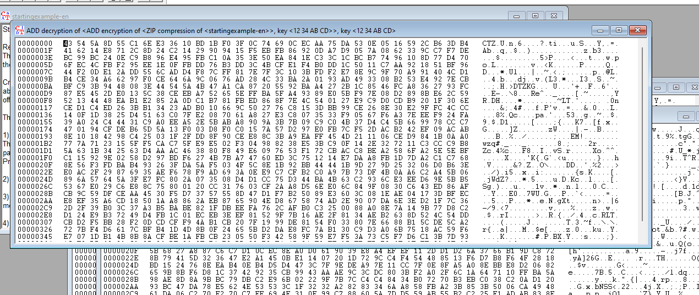
The decrypted output (still in compressed form) displayed in hex view, confirming successful decryption with the known key.
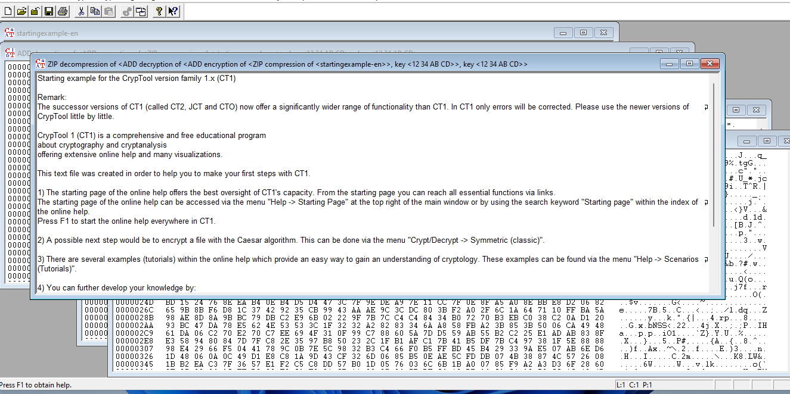
Using decompression to recover the original plaintext from the decrypted file.
In this final phase, I analyzed XOR encryption, which applies bitwise XOR operations between plaintext and key. Like byte addition, XOR applies the key cyclically and is vulnerable to frequency-based cryptanalysis.
I opened CrypTool.bmp (a binary file) to examine how the encryption technique handles binary data:
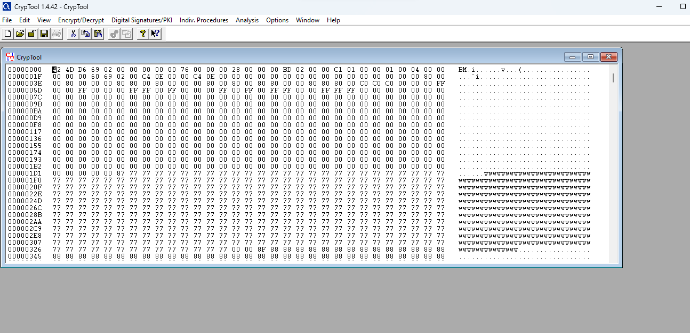
Loading the binary test file for XOR encryption analysis.
I analyzed the character frequency distribution of the original bitmap file:
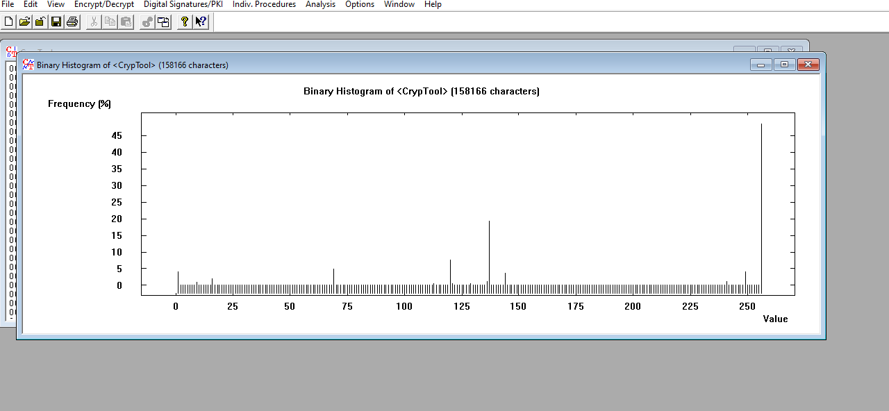
The histogram reveals that byte value 255 (FF in hexadecimal) is the most common character in the bitmap file. This insight is crucial for the subsequent cryptanalysis attack.
I encrypted the file using the key 12 34 56 78:
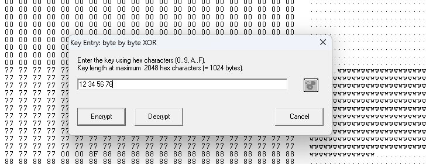
Entering the XOR encryption key (12 34 56 78) in the key entry dialog.
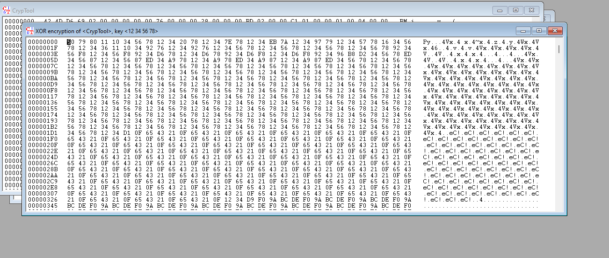
Encrypting the bitmap file using XOR with the 4-byte key.
I performed a ciphertext-only attack to recover the XOR key. First, the analysis tool calculated the autocorrelation of the ciphertext:
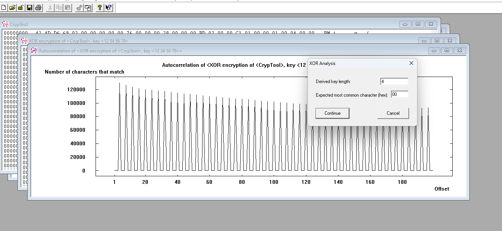
CrypTool's autocorrelation correctly identified the key length as 4, and prompts for the expected most common character value.
The tool correctly identified the key length as 4. I entered the most common byte value (FF) that I observed in the histogram:
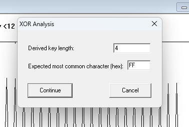
Setting the expected most common character (FF) in the XOR analysis tool.
I clicked Continue, and CrypTool successfully recovered the key:
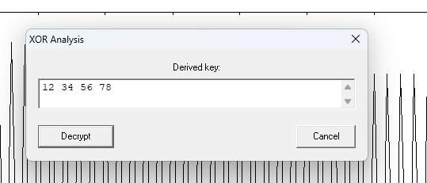
The key recovery was successful, demonstrating the vulnerability of XOR to frequency analysis.
I then decrypted the file:
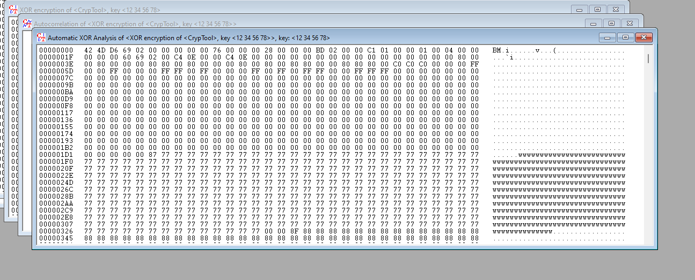
The decrypted bitmap data matches the original file, confirming successful key recovery and decryption.
I compressed the original bitmap file using ZIP compression:
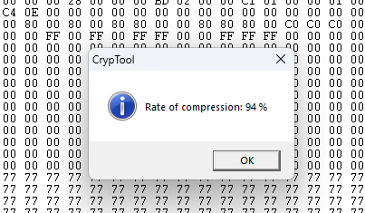
ZIP compression achieved a 94% compression rate on the bitmap file due to its highly repetitive byte patterns.
When I analyzed the histogram of the compressed bitmap, the character frequency distribution changed dramatically:
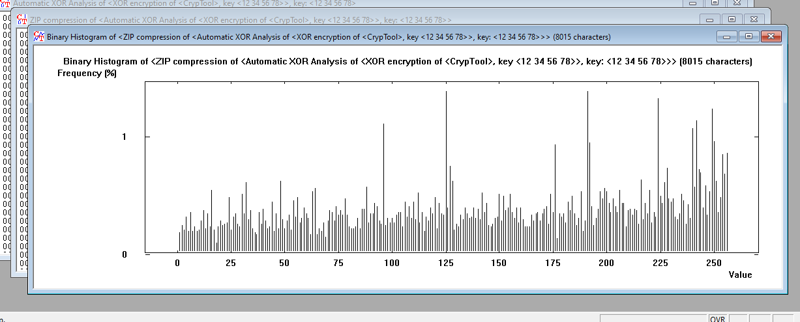
The compressed data shows a uniform distribution, eliminating the distinctive peak at byte value 255.
I encrypted the compressed file using the same key (12 34 56 78) and performed the analysis:
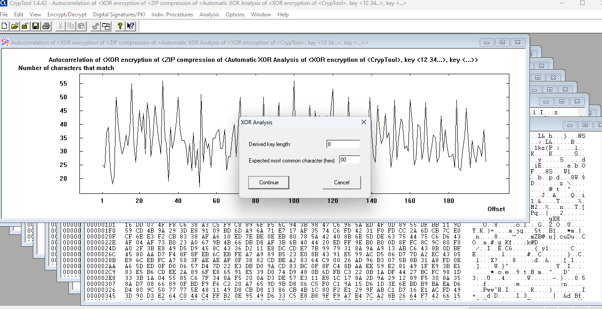
The attack on compressed-then-encrypted data derived an incorrect key length of 8 (instead of 4), demonstrating that compression defeats the autocorrelation-based attack.
Through this project, I gained critical insights into classical encryption and cryptanalysis:
Frequency Analysis is Powerful: Both byte addition and XOR encryption are vulnerable to frequency-based attacks when the plaintext has recognizable character distributions. This was especially evident when analyzing English text and bitmap files.
Compression as a Countermeasure: Compressing data before encryption significantly strengthens security by flattening character frequency distributions. This demonstrates how simple preprocessing can defeat frequency-based attacks.
Digraph vs. Character-Level Encryption: The Playfair cipher's digraph approach provides better security than simple character-by-character substitution, though it remains vulnerable to statistical analysis with sufficient ciphertext.
Modular Arithmetic in Cryptography: Understanding how modulo arithmetic works in encryption (modulo 256 for byte addition) is fundamental to both implementing and attacking cryptographic systems.
The Importance of Key Length: Longer, non-repeating keys are essential. Cyclic key application (as seen in both byte addition and XOR) allows frequency patterns to emerge if the key repeats often relative to the message length.
This project provided hands-on experience with classical encryption techniques and demonstrated why modern cryptography requires significantly more complex approaches to resist sophisticated attacks.